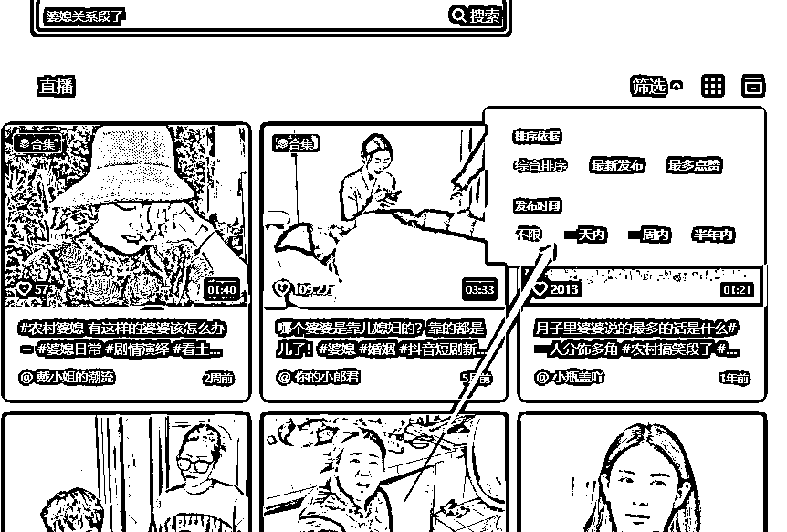

来源：https://dte8en3l2y.feishu.cn/docx/EBaad4nGJotQjAxtZgjcochNn6b
视频号最近很火啊，
然后昨晚我自己刷了一下广场，看到了一些账号，结合我自己的经验来跟大家分享一下哈。
第一个是就是直播拉号的玩法，这种就是吃广场流，一般建议大家玩卡广场的形式来玩，当然了你是真人出境的话和在玩抖音是一样的，正常去拉就好了，做一下账号的数据，这种玩法的话，新手一般玩不来，我就不重点讲了。
第二种玩法，也就是最近比较流行的玩法，我稍微讲一下，就是利用短视频的流量去拉起来直播间的流量。然后直接开播转化。
具体怎么做呢？下面我来详细说一下。
视频号基本上都是大龄人群，这个不用我说了，我这里给新手的一个思路啊，就是选择居家方向，这个不管是从客单价，还是受众人群，都是很好出单的。不是说别的赛道不行啊，我这里是结合我自己的经验，给新手一点点建议，你找到好的产品都是可以的，方法也是通用的。
在居家方向里面找几个款去测试，当然了，也可以用我教学员快速选品的一种方法，那就是直接刷到广场爆的，直接无脑去复制他，这样也行，不要思考太多。
新手啊，我的建议是不要去用什么工具查数据，各种对比这种操作啊，因为一般新手都是比较想快速拿到结果的那种感觉，如果你一上来就是做数据，做对比，做分析，一个星期，啥都没看到，你的热情就下去了。所以说直接复制，先拿到一点结果，这样你也更有信心，然后再去慢慢的选择更稳定的玩法。
确定好产品，就去找视频素材，一般直接搜索带有剧情的那种，什么婆媳啊，兄弟啊，这种，就是说呢，看热闹不嫌事大的那种段子，段子里面带有产品的也可以 视频素材不局限于任何平台。

下载视频工具啊，我用的是哼哼猫，我就不推荐工具这类的东西了啊，只要能批量下载视频的都行。我用的这个软件批量下载视频很方便，几百条的话很快就好了，大家有自己的用就用自己用的。
视频下载完以后，直接打开剪映去做一下视频去重，其实一般主流的去重手法都是加画中画，翻转，变速，贴纸这些，我就不重复讲了。都是这些步骤。基本上都是一分钟一条视频，没啥难度啊。
一个小时发布1条，先去定时发个5-10条测试一下你的账号流量，如果说发了一两条流量还是不行，一个小时内都是很低很低的播放，那就换个号发，这个号先放一放，如果说流量还不错，你就一直定时发布就行了。
在这里说一下，如果你确定了你的爆款视频，你是可以重复发这一条视频的，但是每次发都需要重新处理去重一下这个视频。
如果发了几条整个账号播放还行，直接可以开播了。
一种是真人出境，用绿幕，露个脸，对着稿子念，
一种就是无人的形式，直接把别人的直播素材录制下来，去重拿上去放。
直播就这么两种，很简单。如果对无人直播不太懂的，和手上账号不是很多的情况下，选择第一种真人出境
如果对无人懂然后又有账号资源的话，直接用无人，快速去铺号占领市场就行了。
如果你的账号爆了，基本上一天就废了，别想账号寿命会很长，所以说没有账号资源的，只能是先用无限实名的方法先去把自己的账号资源撸一撸，如果说碰到有些号流量比较可以的话，一天万八千是没有问题的，视频号的单价和利润我就不强调了，同一个商品，抖音卖38 快手卖58 视频号卖188 哈哈 亲眼所见。我是颜如玉，感谢大家的观看。